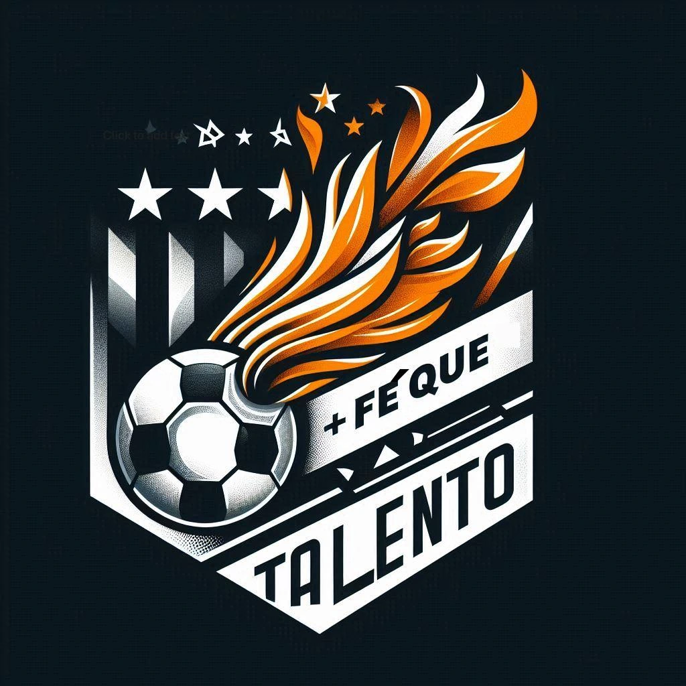

The website serves as a digital hub for tracking player attendance,
game schedules, scores, and
assists.
It will also allow new players to register and join the group.
Upcoming Matches

The website serves as a digital hub for tracking player attendance,
game schedules, scores, and
assists.
It will also allow new players to register and join the group.